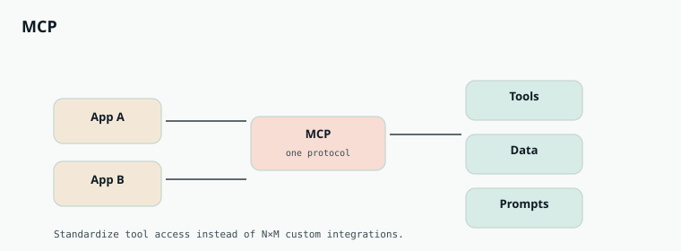

AI Engineering
Chapter 40
MCP
Once every product reinvents “how the model talks to GitHub,” you get a mess of bespoke adapters. The Model Context Protocol is the standardization chapter of the story: one way for a host application to discover and call tools, read resources, and load prompts from many servers.

Host, client, server
The host is your AI app — IDE, desktop agent, internal assistant. Inside it, an MCP client speaks the protocol. An MCP server is a small program that exposes capabilities for one domain: files, a database, Slack, a browser. You can run many servers; the host composes them.
Think USB for AI tools. The host does not need a custom SDK for each integration if both sides speak MCP.
What a server can expose
| Primitive | Meaning | Example |
|---|---|---|
| Tools | Actions the model can invoke | create_issue, run_query |
| Resources | Readable data / files | schema://customers |
| Prompts | Reusable prompt templates | summarize_pr |
# Conceptual shape of a tiny MCP tool server
@server.tool()
def search_docs(query: str, limit: int = 5) -> list[dict]:
"""Search the internal documentation corpus."""
return index.search(query, limit=limit)
Why interviewers ask about MCP
It shows you understand the integration problem at platform scale: auth, discovery, schema negotiation, and least privilege. Without a standard, N apps times M tools becomes an explosion. With a standard, servers become reusable building blocks.
Security still sits with you
A protocol does not make tools safe. Scope OAuth carefully, sandbox file access, audit tool calls, and never expose destructive tools to untrusted prompts without a human gate. Treat server output as untrusted data in the prompt.
MCP is how the agent chapter stops being a pile of one-off connectors and becomes an ecosystem.
Discovery and schemas
At connect time the client asks the server what tools exist and what JSON schemas they take. The host converts those into the model’s tool list. When a server updates, clients renegotiate. This dynamic discovery is why MCP beats hard-coded plugins for evolving internal platforms.
Local vs remote servers
Servers may run beside the host (stdio) or over the network. Local servers fit IDE file access; remote servers fit shared company tools. Network servers need authn/z, rate limits, and careful data residency — call that out in designs.
Composable ecosystems
One team publishes a “warehouse MCP server,” another publishes “pager.” Any compliant host can use both. Your interview story: reduce N×M integrations to N+M by standardizing the wire format and capability descriptors.
Interview drill — MCP / tool protocols
Protocols, trust boundaries, and tool retrieval — not buzzword bingo.
More drills in the Interview Lab.
Q1. Why a tool protocol exists
Why not hardcode every integration?
Standard schemas let many hosts talk to many servers; auth and discovery become shared; agents retrieve tools instead of mega-prompts.
Q2. Trust boundary
Third-party tool server is compromised.
- Scoped tokens per server; user consent.
- Sandbox; allowlist sensitive tools.
- Treat returned content as untrusted.
- Audit every invocation.
Q3. Tool overload
200 tools destroy accuracy.
Retrieve top relevant tool schemas per turn; hierarchical routers; tight descriptions.
Q4. Idempotent tools
Agent retries a side-effecting tool.
Idempotency keys in the contract; servers dedupe; agents pass stable keys from session+step.
Q5. Local vs remote tools
Filesystem tool vs cloud API.
Local: permission prompts + path sandbox. Remote: OAuth, rate limits, residency. Same schema, different policy.